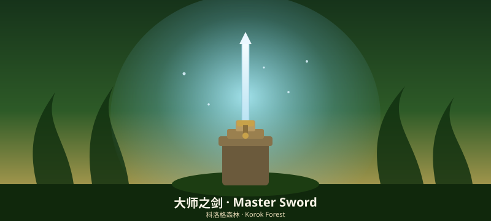
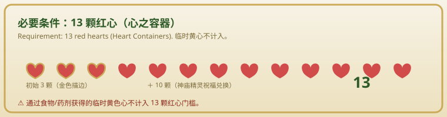
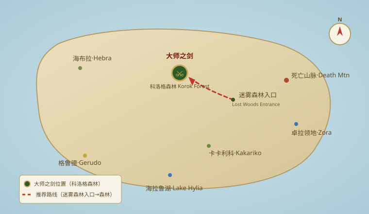
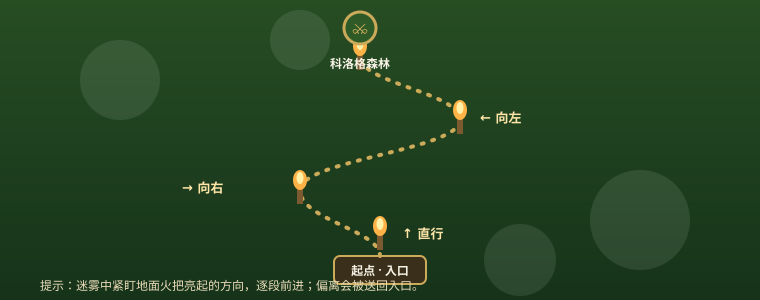
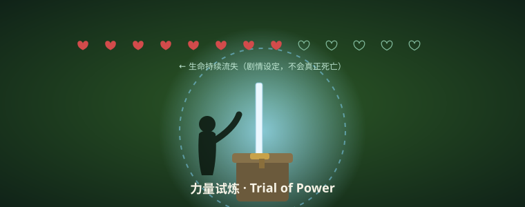

如何拔起大师之剑（旷野之息）How to Pull the Master Sword (Breath of the Wild)

大师之剑是《塞尔达传说：旷野之息》中唯一可永久修复、且对灾厄加侬与守护者造成额外伤害的传奇武器。但它并非随时能拔——林克必须达到足够的"心之容器"容量，并通过迷雾森林的力量试炼。下面一步步带你拿到它。The Master Sword is the only self-repairing legendary weapon in Breath of the Wild, dealing extra damage to Calamity Ganon and Guardians. But you can't just yank it out — Link needs enough Heart Containers and must pass the Trial of Power in the Lost Woods. Here's how, step by step.
一、必要条件：13 颗红心1. Requirement: 13 Heart Containers
拔剑的核心门槛是至少 13 颗红心（满血状态的红色心心）。注意：通过食物或药剂临时提升的黄色心不计入。也就是说，你需要把"心之容器"堆到 13 颗。The core gate is at least 13 red hearts (full-health hearts). Note: temporary yellow hearts from food or elixirs don't count. In other words, you need 13 Heart Containers.
- 初始 3 颗心，需在各地神庙中收集 10 个额外心之容器（每个容器需 4 个精灵祝福）。You start with 3 hearts; collect 10 extra Heart Containers from shrines (each needs 4 Spirit Orbs).
- 若你已把精力容器点满，可找哈特诺村的"神灵之泉"用精力换红心（需完成相应支线）。If you've maxed Stamina Vessels, trade stamina for hearts at the Goddess Statue in Hateno Village (requires a side quest).
- 建议优先解锁 120 座神庙中的一部分，凑齐心数再前往。Unlock a portion of the 120 shrines first, then head over once you have enough hearts.

二、位置说明：迷雾森林（Lost Woods）2. Location: Lost Woods
大师之剑位于科特湖（Korok Forest）深处的石台，从地图看在死亡 Mountain 西北方向。进入方式：The Master Sword rests on a pedestal deep in Korok Forest, northwest of Death Mountain. How to get in:
- 前往迷雾森林入口（可从卡卡利科村向北行进）。Head to the Lost Woods entrance (travel north from Kakariko Village).
- 迷雾中若偏离火把指引的路线会被传送回入口——紧盯地面上火把亮起的方向逐段前进。Stray from the torch-lit path in the fog and you'll be warped back — follow the direction the torches point, segment by segment.
- 穿过迷雾抵达科特湖，沿湖走到中央的石台，大师之剑就插在那里。Pass through the fog to reach Korok Forest, walk to the central pedestal by the lake — that's where the sword is planted.


三、详细步骤（至少 4 步）3. Detailed Steps (4+)
- 确认红心数量：打开地图或状态界面，确认红色心心不少于 13 颗。Check your hearts: open the map or stats screen and confirm you have at least 13 red hearts.
- 抵达石台：在科特湖中央找到插剑的石台，靠近触发剧情。Reach the pedestal: find the sword pedestal at the center of Korok Forest and approach to trigger the cutscene.
- 承受试炼：林克将握住剑柄，画面进入"力量试炼"——屏幕会持续扣血，坚持到扣完 13 颗心（不会真正死亡，而是被弹出）。Endure the trial: Link grips the hilt and enters the "Trial of Power" — your health drains continuously; hold on until all 13 hearts are gone (you won't truly die, just get ejected).
- 成功拔剑：试炼结束后，大师之剑归你所有，并可随时在石台处免费修复。Pull it out: after the trial, the Master Sword is yours and can be repaired free at the pedestal anytime.
- （可选）新手保护：若仍差几颗心，可先去刷几座神庙或完成相关支线再来。(Optional) beginner tip: if you're short a few hearts, grind some shrines or side quests first, then return.

四、小贴士4. Tips
- 拔剑不消耗武器耐久，且剑有 40 点攻击力并自动回血修复，是中期主战利器。Pulling it doesn't consume weapon durability; with 40 attack and auto-repair, it's your mid-game workhorse.
- 试炼扣血时不要慌张，这是剧情设定，不会真正死亡。Don't panic during the draining trial — it's scripted and you won't truly die.
- 若红心不足，可先在哈特诺村用精力兑换，不必硬刷全部神庙。If short on hearts, trade stamina in Hateno first — no need to grind every shrine.
- 拿到剑后建议优先清理附近守护者练手感，熟悉"完美闪避 + 大师之剑"的连招。After getting it, clear nearby Guardians to practice the "perfect dodge + Master Sword" combo.